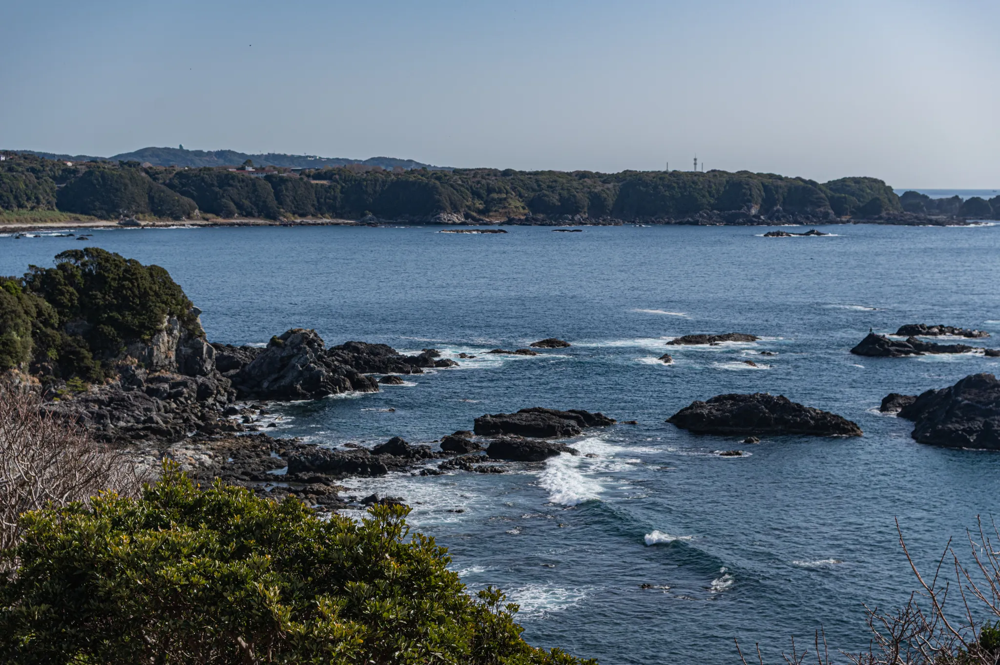

今日のカイロスの打ち上げは天候不良が予測されるとのことで中止に。串本から町外に帰る車が 42 号線で夕方まで渋滞していた。
打ち上げが中止になることで、町内の宿泊施設にクレームが殺到するなど、相変わらずわけのわからない現象が起きていて、なぜ？と思う。
今日の夜、師匠といろいろ話をしていて、1999 年の住崎でのエア切れによるゲスト置き去り事件の話題になってしまった。
最初はなぜぼくが 22 年間もダイビングをできなくなったのか、という話を聞かれただけなのだけれど、当然 1999 年の住崎事件に触れないわけにはいかず、そのことを話すことになった。
そもそもなんでそんなことが起きるのか理解できないので、ことの顛末の詳細の説明を求められた。ケーススタディとして後学のために知っておきたいとのことで、はじめて住崎事件の顛末を師匠に説明した。
師匠は微に入り細に入り、いろいろ質問をしてきて、そのときのぼくが何を考えて、そのときのぼくの心理状態をこと細かに尋ねてくる。そしてそれで何で潜れなくなったのかを訊いてくる。
そもそもなぜダイブマスターコースをやめて、インストラクターになることもやめてしまったのかと尋ねてくる。
ぼくのような人間はインストラクターなどになるべきではないと思って、そう思うだけでなく、ゲストを水中に置き去りにしたことがトラウマとなって潜れなくなってしまった、という核心部に触れた途端に涙があふれて止らなくなってしまった。
だからと言って師匠の質問は止まることはなく、ぼくも涙を流しながらとにかく説明をつづけた。
最終的に指導インストラクターのデブリーフィングはどんな内容になったのか、事故になっていたとしてもおかしくない状況に対する指導インストラクターの指導はどうだったのか、その後のショップの指導はどうだったのかと話は移っていった。
ただ師匠にはトラウマで潜れなくなる、ってこと自体がだめで、そこは反省して改善に結びつけて続けないと、と非常にもっともな意見を頂戴した。
ぼくがいい歳をしてボロボロと泣いているためか、それから数分は目も合わせてもらえなくなってしまった。呆れられてしっまったろうなと思ったけれど、トイレで中座して戻ると、いつもの師匠に戻っていた。
最終的に、ゲストを殺すことになるからお前がインストラクターになんかならなくて良ったとの言葉をいただいた。
ぼくが 27 年間、自分自身でずっと思ってきたことを師匠の口から聞くことができた。
27 年間、誰もこのことを言ってはくれなかったけれど、27 年目にしてやっとぼく以外の口からこの言葉を聞くことができた。
27 年という刻はもう帰ってこないのだけれど。